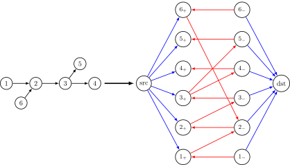
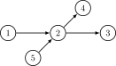

A mathematician is a person who can find analogies between theorems; a better mathematician is one who can see analogies between proofs and the best mathematician can notice analogies between theories. One can imagine that the ultimate mathematician is one who can see analogies between analogies.
Stefan Banach
Path Cover
Given a simple directed acyclic graph $G=(\mathcal{V}, \mathcal{E})$, a path cover is a set of vertex-disjoint paths with their union equal to $\mathcal{V}$. Here is a more formal definition.
In other words, if we denote the set of vertices in $P_i$ by $\mathcal{P}_i$, we can observe that $\lbrace \mathcal{P}_1,\mathcal{P}_2,\ldots, \mathcal{P}_k \rbrace$ is a partion of $\mathcal{V}$. By definition, we can see $\lbrace (v):v\in\mathcal{V} \rbrace$ is a trivial path cover with size of $\vert \mathcal{V}\vert$. By “merging” some paths we can make the size smaller, thus there exist a (may not only) path cover with minimum size. Our question is how to find a minimum path cover? Since we don’t care about the order of vertices in a certain path of the path cover, we view $\lbrace \mathcal{P}_1,\mathcal{P}_2,\ldots, \mathcal{P}_k \rbrace$ also as a path cover only if the vertices in every $\mathcal{P}_i$ can form a valid path.
Greedily choosing the longest path whenever possible does not seem to be correct. Fewer paths do not necessarily mean longer path lengths. Here, we have some useful observations:
-
If $\mathcal{PC}$ is a valid path cover with size $k$, which means there are $k$ vertex-disjoint paths. Let $l$ be the number of edges covered by $\mathcal{PC}$, then $k+l=n$1.
-
For any vertex $v\in \mathcal{P}_i$, there exists at most one direct successor $u\in\mathcal{P}_i$. Similarily, there exists at most one direct predecessor in $\mathcal{P}_i$.
Guided by these rules, we will connect some pairs of vertices by arcs, ensuring that each vertex is incident to at most one incoming and one outgoing arc. Thus, we can split $v$ into two vertices, $v_{\text{out}}$ and $v_{\text{in}}$, thereby constructing a new graph $G’ = (\mathcal{V}’, \mathcal{E}’)$ such that
\[\begin{cases} \mathcal{V}'=\lbrace v_{\text{out}}:v\in \mathcal{V}\rbrace \cup \lbrace v_{\text{in}}:v\in \mathcal{V}\rbrace,\\ \mathcal{E}'=\lbrace \lbrace v_{\text{out}},u_{\text{in}} \rbrace: ( v,u ) \in\mathcal{E}\rbrace. \end{cases}\]It’s obvious to see that $G’$ is a bipartite graph, and every time we find a matching $M$ with size $l$. Then, by merging $v_{\text{out}}$ and $v_{\text{in}}$ and connecting the vertices using the edges in the matching, we obtain a path cover of $G$ with size $n-l$. Therefore, we can reduce this problem to the bipartite graph matching problem / maximum flow problem.
Chain Cover
The problem we face with the chain cover is slightly different. Every two vertices in a chain only need to satisfy that one of them can reach the other.
A straightforward way to solve this problem is to connect each pair of vertices $v$ and $u$ if $u$ is reachable from $v$. However, this approach is not ideal, as it may introduce too many arcs—potentially up to $O(n^2)$. In this case, we every time try to connect some pair $(v, u)$, which results in a path in $G$, but we don’t care about the intermediate vertices along the path. In other words, we are only concerned with the start and end vertices. Therefore, we can similarly split each vertex $v$ into two vertices, $v_{\text{out}}$ and $v_{\text{in}}$, , where $v_{\text{out}}$ can be treated as a start vertex and $v_{\text{in}}$ as an end vertex only once.
Therefore, we can construct a flow network $N$ as follows: each vertex $v$ is split into two vertices, $v_{\text{out}}$ and $v_{\text{in}}$. We then introduce a source vertex src and a sink vertex dst. For each $v$, we add an arc from src to $v_{\text{out}}$ with capacity 1, and an arc from $v_{\text{in}}$ to dst with capacity 1. For every arc $(v, u) \in \mathcal{E}$, we add an arc from $v_{\text{out}}$ to $u_{\text{in}}$ with infinite capacity. For every $v$, we add an arc from $v_{\text{in}}$ to $v_{\text{out}}$ with infinite capacity. Each unit of flow in $N$ corresponds to a valid pair $(v, u)$ in the original graph. Therefore, the size of the minimum chain cover is given by $n - f_{\text{max}}$, where $f_{\text{max}}$ denotes the maximum flow in $N$2.
The figure below illustrates an example in which the blue arcs have capacity 1, while the red arcs have infinite capacity ($\infty$).

This is because the key constraint in the path cover problem is that each vertex—specifically, $v_{\text{out}}$ and $v_{\text{in}}$—can be used at most once. However, this constraint is not equivalent to simply limiting the capacity of the corresponding arcs in the flow network. Here is a counterexample:

Antichain
An antichain is a subset of vertices such that no vertex in the set is reachable from another. We denote an antichain by $\mathcal{A} \subseteq \mathcal{V}$. To illustrate the connection between antichains and chain covers, let us recall Dilworth’s theorem:
So, now we want to find a maximum antichain which is at least as large as other antichains. Let us look at some antichain $\mathcal{A}$: since $u\in\mathcal{A}$ is not reachable from $v$ for all $v, v\in \mathcal{A}$, we can consider a subgraph $H$ of $G$ containing all vertices that can be accessible from some $v\in \mathcal{A}$. Thus, we now introduce a concept called closed subgraph.
We can see, all vertices in $H$ with indegree is 0 form an antichain. Therefore, our goal is to find some closed subgraph that maximizes the number of such vertices. To achieve this, we now again split every $v$ into $v_{\text{out}}$ and $v_{\text{in}}$, then assign weight 1 to $v_{\text{out}}$ and $-1$ to $v_{\text{in}}$. Similarly, we add an arc from $v_{\text{out}}$ to $u_{\text{in}}$ if $(v,u)\in \mathcal{E}$, and an arc from $v_{\text{in}}$ to $v_{\text{out}}$ for all $v\in \mathcal{V}$.
We use $G_{w}$ to denote this transformed weighted graph. We use $wt(\cdot)$ to denote the weight of a vertex, meaning $wt(v_{\text{out/in}})=\pm 1$. The weight of weighted subgraph $H_w$, denoted by $wt(H_w)$, is defined as follows:
\[wt(H_w)=\sum_{v\in \mathcal{V}(H_w)} wt(v).\]We claim that the maximum weight of $H_w$ is equal to the size of the maximum antichain of $G$.
What we need to do now is to find the maximum-weighted closed subgraph of $G_w$. Fortunately, there is a famous method to solve this by transforming it to a minimum cut problem. Construct a flow network $N’$ containing all vertices in $G_w$, a source src and a sink dst as follows: for all $v,u$ with $(v, u)\in\mathcal{E}(G_w)$, we add an arc $(v,u)$ with capacity $\infty$; for all $v_{\text{out}}$, add an arc with $1$ capacity from src to $v_{\text{out}}$, and an arc with $1$ capacity from $v_{\text{in}}$ to dst.
The correctness of this proposition is not hard to see. Actually, we can prove there exists a bijection from simple cuts to weighted closed subgraphs.
We can now view Dilworth’s theorem from the perspective of network flows. Noting that $N’ = N$, and by the max-flow min-cut theorem, we conclude that the maximum size of an antichain equals the minimum size of a chain cover.
-
For simplicity, we denote $\vert \mathcal{V}\vert,\vert \mathcal{E}\vert$ by $n,m$, respectively. ↩
-
Please refer to The 1st Universal Cup, Stage 12: Ōokayama — Problem M. Colorful Graph for more details. ↩